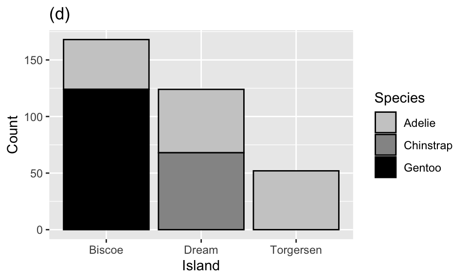
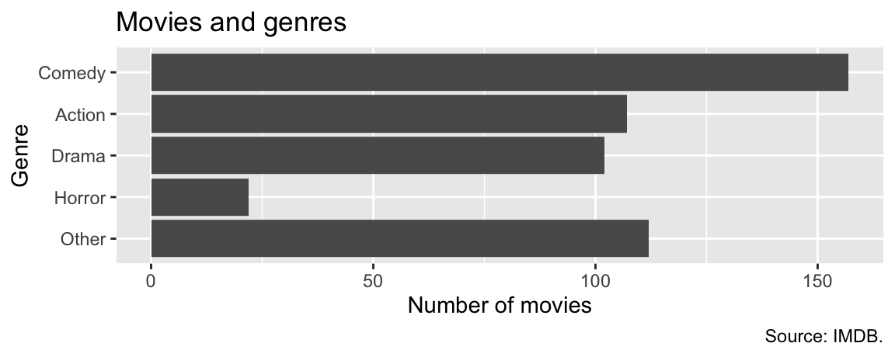

| Island | Adelie | Gentoo | Chinstrap | Total |
|---|---|---|---|---|
| Biscoe | 44 | 124 | 0 | 168 |
| Dream | 56 | 0 | 68 | 124 |
| Torgersen | 52 | 0 | 0 | 52 |
| Total | 152 | 124 | 68 | 344 |
Midterm Practice Questions
Part 2
Solutions
Posted!
Help
Use Ed or office hours for getting help with these practice questions - avoid emails!!
Some of these review questions uses data sets that you have seen before. Remember, you do not need to have any details of these data sets memorized - any specifics needed on the exam will be provided.
Penguins
The penguins data set includes measurements for penguin species, including: flipper length, body mass, bill dimensions, and sex. The following table summarizes information on which species of penguins (Adelie, Gentoo, and Chinstrap) live on which islands (Biscoe, Dream, or Torgersen).
Question 1
Which of the following plots is the result of the following code?
ggplot(penguins, aes(x = island, fill = species)) +
geom_bar()




NYC Flights
The flights dataset includes characteristics of all flights departing from New York City airports (JFK, LGA, EWR) in 2013. Below is a peek at the first ten rows of the flights data.
# A tibble: 336,776 × 19
year month day arr_delay carrier dep_time sched_dep_time dep_delay
<int> <int> <int> <dbl> <chr> <int> <int> <dbl>
1 2013 1 1 11 UA 517 515 2
2 2013 1 1 20 UA 533 529 4
3 2013 1 1 33 AA 542 540 2
4 2013 1 1 -18 B6 544 545 -1
5 2013 1 1 -25 DL 554 600 -6
6 2013 1 1 12 UA 554 558 -4
7 2013 1 1 19 B6 555 600 -5
8 2013 1 1 -14 EV 557 600 -3
9 2013 1 1 -8 B6 557 600 -3
10 2013 1 1 8 AA 558 600 -2
# ℹ 336,766 more rows
# ℹ 11 more variables: arr_time <int>, sched_arr_time <int>, flight <int>,
# tailnum <chr>, origin <chr>, dest <chr>, air_time <dbl>, distance <dbl>,
# hour <dbl>, minute <dbl>, time_hour <dttm>Question 2
Based on this output, which of the following must be true about the flights data frame? Select all that are true.
The
flightsdata frame has 10 rows.The
flightsdata frame has 8 columns.The
carriervariable in theflightsdata frame is a character variable.There are no missing data in the
flightsdata frame.
Question 3
Which of the following pipelines produce(s) the output shown below? Select all that apply.
# A tibble: 336,776 × 5
arr_delay carrier year month day
<dbl> <chr> <int> <int> <int>
1 1272 HA 2013 1 9
2 1127 MQ 2013 6 15
3 1109 MQ 2013 1 10
4 1007 AA 2013 9 20
5 989 MQ 2013 7 22
6 931 DL 2013 4 10
7 915 DL 2013 3 17
8 895 DL 2013 7 22
9 878 AA 2013 12 5
10 875 MQ 2013 5 3
# ℹ 336,766 more rowsa.
flights |>
select(arr_delay, carrier, year, month, day) |>
arrange(desc(arr_delay))b.
flights |>
select(arr_delay, carrier, year, month, day) |>
arrange(arr_delay)c.
flights |>
select(arr_delay, carrier, year, month, day) |>
arrange(year)d.
flights |>
arrange(desc(arr_delay)) |>
select(arr_delay, carrier, year, month, day)e.
flights |>
arrange(desc(arr_delay)) |>
select(day, month, year, arr_delay, carrier)Countries and populations
We have a small dataset of six countries and their populations:
population# A tibble: 6 × 2
country population
<chr> <dbl>
1 Curacao 150
2 Ecuador 18001
3 Iraq 44496.
4 New Zealand 5124.
5 Palau 18.0
6 United States 333288. And another small dataset of five countries and the continent they’re in:
continents# A tibble: 5 × 3
entity code continent
<chr> <chr> <chr>
1 Angola AGO Africa
2 Curacao CUW North America
3 Ecuador ECU South America
4 Iraq IRQ Asia
5 New Zealand NZL Oceania You join the two datasets with the following:
population |>
left_join(continents, by = join_by(country == entity))Question 4
How many rows will the resulting data frame have?
- 4
- 5
- 6
- 7
- 8
Question 5
What will be the columns of the resulting data frame?
country,populationcountry,population,code,continententity,code,continententity,population,code,continentcountry,entity,population,code,continent
Duke Forest houses
The duke_forest dataset includes information on prices and various other features (number of bedrooms, bathrooms, area, year built, type of cooling, type of heating, etc.) of houses in the Duke Forest neighborhood of Durham, NC.
glimpse(duke_forest)Rows: 98
Columns: 13
$ address <chr> "1 Learned Pl, Durham, NC 27705", "1616 Pinecrest Rd, Durha…
$ price <dbl> 1520000, 1030000, 420000, 680000, 428500, 456000, 1270000, …
$ bed <dbl> 3, 5, 2, 4, 4, 3, 5, 4, 4, 3, 4, 4, 3, 5, 4, 5, 3, 4, 4, 3,…
$ bath <dbl> 4.0, 4.0, 3.0, 3.0, 3.0, 3.0, 5.0, 3.0, 5.0, 2.0, 3.0, 3.0,…
$ area <dbl> 6040, 4475, 1745, 2091, 1772, 1950, 3909, 2841, 3924, 2173,…
$ type <chr> "Single Family", "Single Family", "Single Family", "Single …
$ year_built <dbl> 1972, 1969, 1959, 1961, 2020, 2014, 1968, 1973, 1972, 1964,…
$ heating <chr> "Other, Gas", "Forced air, Gas", "Forced air, Gas", "Heat p…
$ cooling <fct> central, central, central, central, central, central, centr…
$ parking <chr> "0 spaces", "Carport, Covered", "Garage - Attached, Covered…
$ lot <dbl> 0.97, 1.38, 0.51, 0.84, 0.16, 0.45, 0.94, 0.79, 0.53, 0.73,…
$ hoa <chr> NA, NA, NA, NA, NA, NA, NA, NA, NA, NA, NA, NA, NA, NA, NA,…
$ url <chr> "https://www.zillow.com/homedetails/1-Learned-Pl-Durham-NC-…The following summary table gives us some information about whether homes in this data set have garages and when they were built.
| Built earlier than 1950 | Built in 1950 or later | |
|---|---|---|
| Garage | 5 | 33 |
| No garage | 3 | 57 |
The pipeline below produces a data frame with a fewer number of rows than duke_forest.
duke_forest |>
filter(parking == "Garage" _(1)_ year_built _(2)_ 1950) |>
select(parking, year_built, price, area) |>
_(3)_(price_per_sqfeet = price / area)# A tibble: 5 × 5
parking year_built price area price_per_sqfeet
<chr> <dbl> <dbl> <dbl> <dbl>
1 Garage 1945 900000 2933 307.
2 Garage 1938 265000 1300 204.
3 Garage 1934 600000 2514 239.
4 Garage 1941 412500 1661 248.
5 Garage 1940 105000 1094 96.0Question 6
Which of the following goes in blanks (1) and (2)?
| (1) | (2) | |
|---|---|---|
| a. | & |
< |
| b. | | |
< |
| c. | & |
>= |
| d. | | |
>= |
| e. | & |
!= |
Question 7
Which function or functions go into blank (3)? Select all that apply.
arrange()mutate()summarize()slice()
IMDB
The data for the next few questions come from the Internet Movie Database (IMDB). Specifically, the data are a random sample of movies released between 1980 and 2020.
movies <- read_csv("data/movies.csv")The name of the data frame used for this analysis is movies, and it contains the variables shown in Table 1.
movies
| Variable | Description |
|---|---|
name |
name of the movie |
rating |
rating of the movie (R, PG, etc.) |
genre |
main genre of the movie. |
runtime |
duration of the movie |
year |
year of release |
release_date |
release date (YYYY-MM-DD) |
release_country |
release country |
score |
IMDB user rating |
votes |
number of user votes |
director |
the director |
writer |
writer of the movie |
star |
main actor/actress |
country |
country of origin |
budget |
the budget of a movie (some movies don’t have this, so it appears as 0) |
gross |
revenue of the movie |
company |
the production company |
The first thirty rows of the movies data frame are shown in Table 2, with variable types suppressed (since we’ll ask about them later).
First 30 rows of movies, with variable types suppressed.
# A tibble: 500 × 16
name score runtime genre rating release_country release_date
1 Blue City 4.4 83 mins Action R United States 1986-05-02
2 Winter Sleep 8.1 196 Drama Not Rated Turkey 2014-06-12
3 Rang De Basan… 8.1 167 Comedy Not Rated United States 2006-01-26
4 Pokémon Detec… 6.6 104 Action PG United States 2019-05-10
5 A Bad Moms Ch… 5.6 104 Comedy R United States 2017-11-01
6 Replicas 5.5 107 Drama PG-13 United States 2019-01-11
7 Windy City 5.8 103 Drama R Uruguay 1986-01-01
8 War for the P… 7.4 140 Action PG-13 United States 2017-07-14
9 Tales from th… 6.4 98 Crime R United States 1995-05-24
10 Fire with Fire 6.5 103 Drama PG-13 United States 1986-05-09
11 Raising Helen 6 119 Comedy PG-13 United States 2004-05-28
12 Feeling Minne… 5.4 99 Comedy R United States 1996-09-13
13 The Babe 5.9 115 Biography PG United States 1992-04-17
14 The Real Blon… 6 105 Comedy R United States 1998-02-27
15 To vlemma tou… 7.6 176 Drama Not Rated United States 1997-11-01
16 Going the Dis… 6.3 102 Comedy R United States 2010-09-03
17 Jung on zo 6.8 103 Action R Hong Kong 1993-06-24
18 Rita, Sue and… 6.5 93 Comedy R United Kingdom 1987-05-29
19 Phone Booth 7 81 Crime R United States 2003-04-04
20 Happy Death D… 6.6 96 Comedy PG-13 United States 2017-10-13
21 Barely Legal 4.7 90 Comedy R Thailand 2006-05-25
22 Three Kings 7.1 114 Action R United States 1999-10-01
23 Menace II Soc… 7.5 97 Crime R United States 1993-05-26
24 Four Rooms 6.8 98 Comedy R United States 1995-12-25
25 Quartet 6.8 98 Comedy PG-13 United States 2013-03-01
26 Tape 7.2 86 Drama R Denmark 2002-07-12
27 Marked for De… 6 93 Action R United States 1990-10-05
28 Congo 5.2 109 Action PG-13 United States 1995-06-09
29 Stop-Loss 6.4 112 Drama R United States 2008-03-28
30 Con Air 6.9 115 Action R United States 1997-06-06
budget gross votes year director writer star
1 10000000 6947787 1100 1986 Michelle Manning Ross Macdona… Judd Nelson
2 NA 4018705 48000 2014 Nuri Bilge Ceyl… Ebru Ceylan Haluk Bilgin…
3 NA 10800778 115000 2006 Rakeysh Ompraka… Renzil D'Sil… Aamir Khan
4 150000000 433921300 146000 2019 Rob Letterman Dan Hernandez Ryan Reynolds
5 28000000 130560428 46000 2017 Jon Lucas Jon Lucas Mila Kunis
6 30000000 9330075 34000 2018 Jeffrey Nachman… Chad St. John Keanu Reeves
7 NA 343890 262 1984 Armyan Bernstein Armyan Berns… John Shea
8 150000000 490719763 235000 2017 Matt Reeves Mark Bomback Andy Serkis
9 6000000 11837928 7400 1995 Rusty Cundieff Rusty Cundie… Clarence Wil…
10 NA 4636169 1500 1986 Duncan Gibbins Bill Phillips Craig Sheffer
11 50000000 49718611 36000 2004 Garry Marshall Patrick J. C… Kate Hudson
12 NA 3124440 11000 1996 Steven Baigelman Steven Baige… Keanu Reeves
13 NA 19930973 9300 1992 Arthur Hiller John Fusco John Goodman
14 NA 83488 3900 1997 Tom DiCillo Tom DiCillo Matthew Modi…
15 NA NA 6400 1995 Theodoros Angel… Theodoros An… Harvey Keitel
16 32000000 42059111 57000 2010 Nanette Burstein Geoff LaTuli… Drew Barrymo…
17 NA 3741869 6100 1993 Kirk Wong Tin Nam Chun Jackie Chan
18 NA 124167 3600 1987 Alan Clarke Andrea Dunbar Siobhan Finn…
19 13000000 97837138 255000 2002 Joel Schumacher Larry Cohen Colin Farrell
20 4800000 125479266 124000 2017 Christopher Lan… Scott Lobdell Jessica Rothe
21 NA 83439 5900 2003 David Mickey Ev… David H. Ste… Erik von Det…
22 75000000 107752036 163000 1999 David O. Russell John Ridley George Cloon…
23 3500000 27912072 54000 1993 Albert Hughes Allen Hughes Tyrin Turner
24 4000000 4257354 100000 1995 Directors Allison Ande… Tim Roth
25 11000000 59520298 19000 2012 Dustin Hoffman Ronald Harwo… Maggie Smith
26 100000 515900 19000 2001 Richard Linklat… Stephen Belb… Ethan Hawke
27 12000000 57968936 21000 1990 Dwight H. Little Michael Grais Steven Seagal
28 50000000 152022101 43000 1995 Frank Marshall Michael Cric… Laura Linney
29 25000000 11212953 20000 2008 Kimberly Peirce Mark Richard Ryan Phillip…
30 75000000 224012234 282000 1997 Simon West Scott Rosenb… Nicolas Cage
# ℹ 470 more rows
# ℹ 2 more variables: company, countryQuestion 8
The name and runtime variables are shown below, with the variable types suppressed.
movies |>
select(name, runtime)# A tibble: 500 × 2
name runtime
1 Blue City 83 mins
2 Winter Sleep 196
3 Rang De Basanti 167
4 Pokémon Detective Pikachu 104
5 A Bad Moms Christmas 104
6 Replicas 107
# ℹ 494 more rowsWhat is the type of the runtime variable?
Character
Double
Factor
Integer
Logical
Question 9
The code below summarizes the data in a certain way.
movies |>
summarize(sum(release_country == "United States"))# A tibble: 1 × 1
`sum(release_country == "United States")`
<int>
1 435Which of the following is TRUE about the code and its result? Select all that are true.
Evaluates whether each
release_countryis equal to"United States"or not, which results in a logical variable.Filters out rows where
release_countryis not equal to"United States"and counts the remaining rows.Sums the logical values, where each
TRUEis considered a 1 and eachFALSEis considered a 0.Results in a character vector.
The result shows there are 435 movies released in the United States.
Question 10
Suppose you want a visualization that shows the number of movies in the sample in each genre. Your first attempt is as follows.
ggplot(movies, aes(x = genre)) +
geom_bar()
A friend of yours says that the visualization is difficult to read and they suggest using the following visualization instead.

Which of the following modifications would your friend have made to your code to create their version? Select all that apply.
Combine movies in genres other than Comedy, Drama, Action, and Horror into a new level called
"Other".Reorder the levels in descending order of numbers of observations, except for the
"Other"level.Map
genreto theyaesthetic.Add a title, x and y-axis labels, and a caption.
Filter out all moves in genres other than Comedy, Drama, Action, and Horror before plotting.